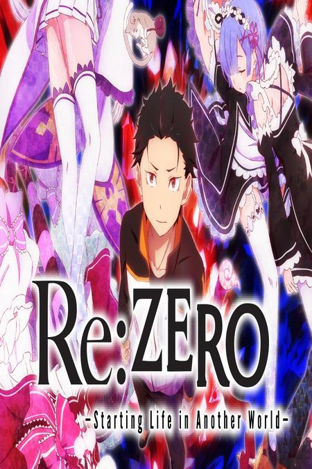
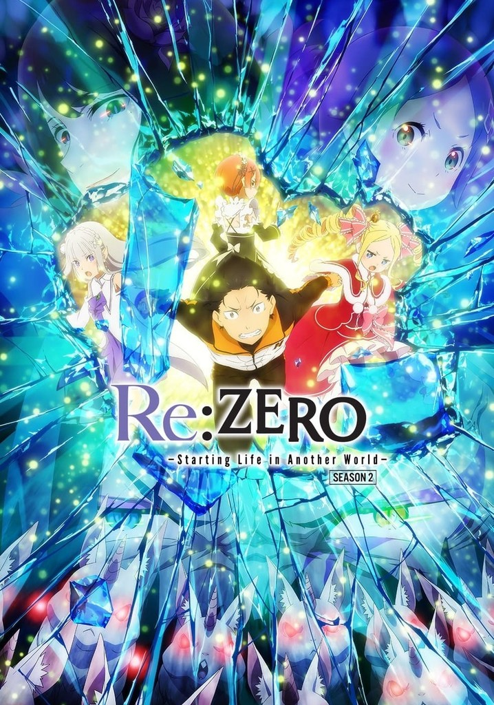
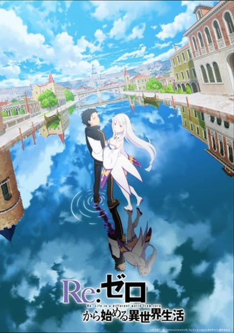

🔍 Re:Zero
Subaru Natsuki es transportado a un mundo de fantasa donde descubre que tiene la habilidad "Return by Death", que le permite volver al pasado cada vez que muere. Una historia pica de sufrimiento, crecimiento y determinacin.


S1
Re:Zero - Temporada 1
Subaru Natsuki es transportado a un mundo de fantasa y conoce a Emilia. Descubre su habilidad "Return by Death" y comienza su doloroso viaje de crecimiento personal.
🔍 25 Episodios
2016
No iniciado
🔍 Descargar Temporada Completa

S2
Re:Zero - Temporada 2
Subaru enfrenta las pruebas del Santuario mientras descubre ms sobre el pasado de Emilia y Rem. Los lazos se fortalecen y los desafos se intensifican.
🔍 25 Episodios
2020-2021
No iniciado
🔍 Descargar Temporada Completa

S3
Re:Zero - Temporada 3
La continuacin de la pica historia de Subaru. Nuevos desafos, ms muertes, y un crecimiento personal an ms profundo en su bsqueda por proteger a quienes ama.
✎ 25 Episodios
2024
No iniciado
🔍 Descargar Temporada Completa